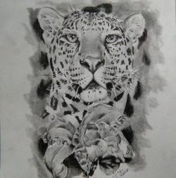
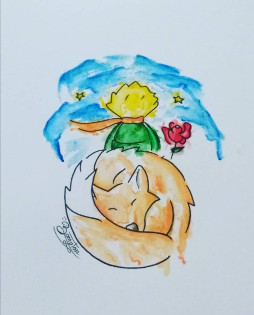
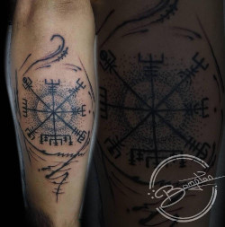
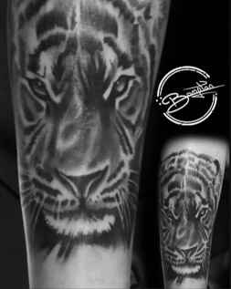
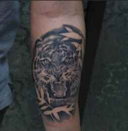
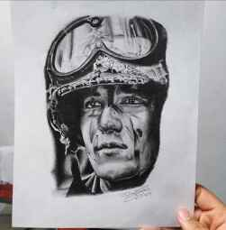
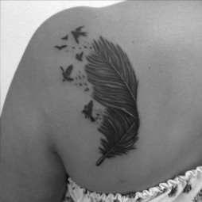

Bompton Studio
“Cuando yo tenía como entre 13 o 15 años mi hermano me llevó un día a tatuarse, yo iba de
acompañante, y cuando llegamos yo vi el proceso y me llamó mucho la atención, ya después cuando
llegué a mi casa me puse a averiguar sobre las cosas de tatuaje me puse a ver videos y buscar
información, ya después busqué quien me podía enseñar pero no encontre quien, un mae que tatuaba
cerca de mi casa me vendió las primeras cosas como maquina, fuente de poder, los cables y la
máquina, ahí medio me puse a travesíar y al tiempo encontré a una persona que si me enseñó muchas
cosas de las que hoy sé, y ya sabiendo más cosas decidí seguir tatuando y realizando este tipo de
trabajos.”
Galeria






